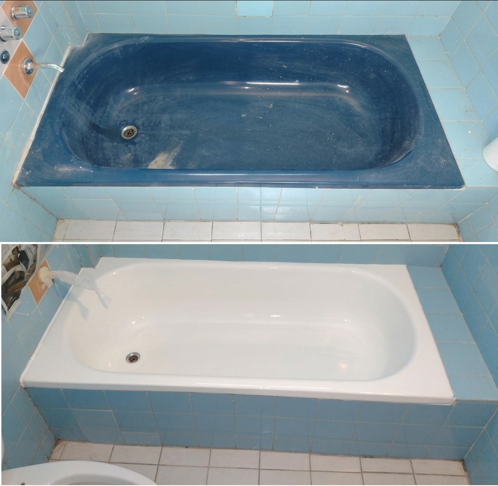
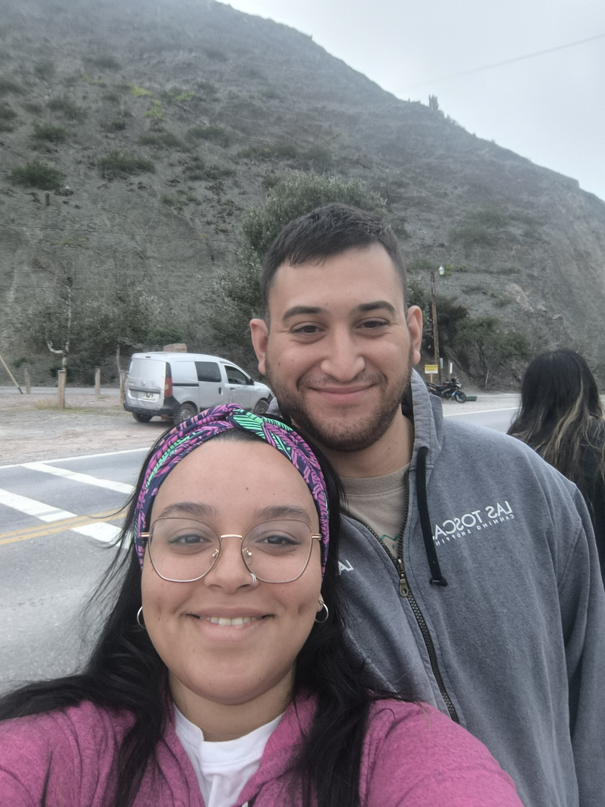
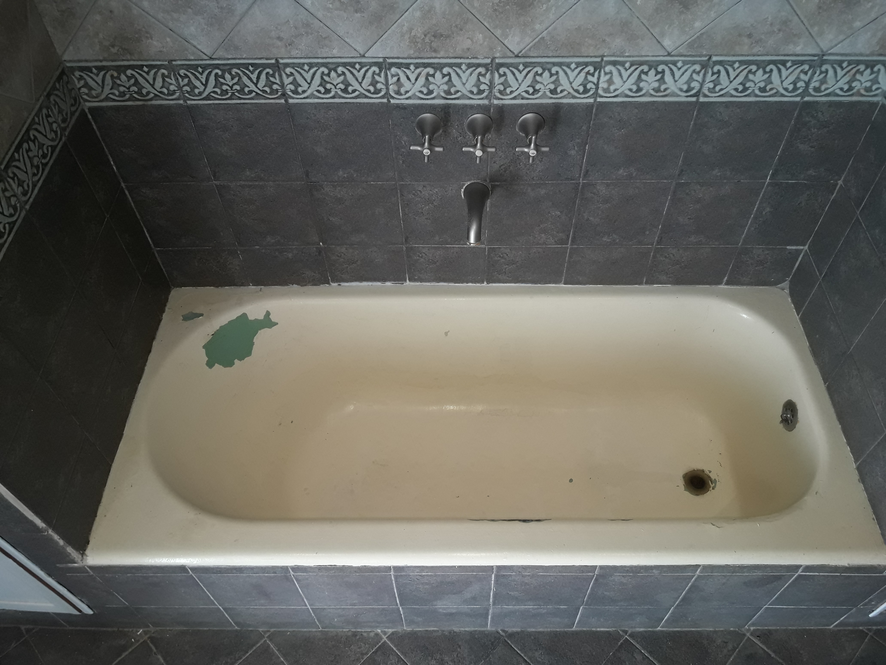
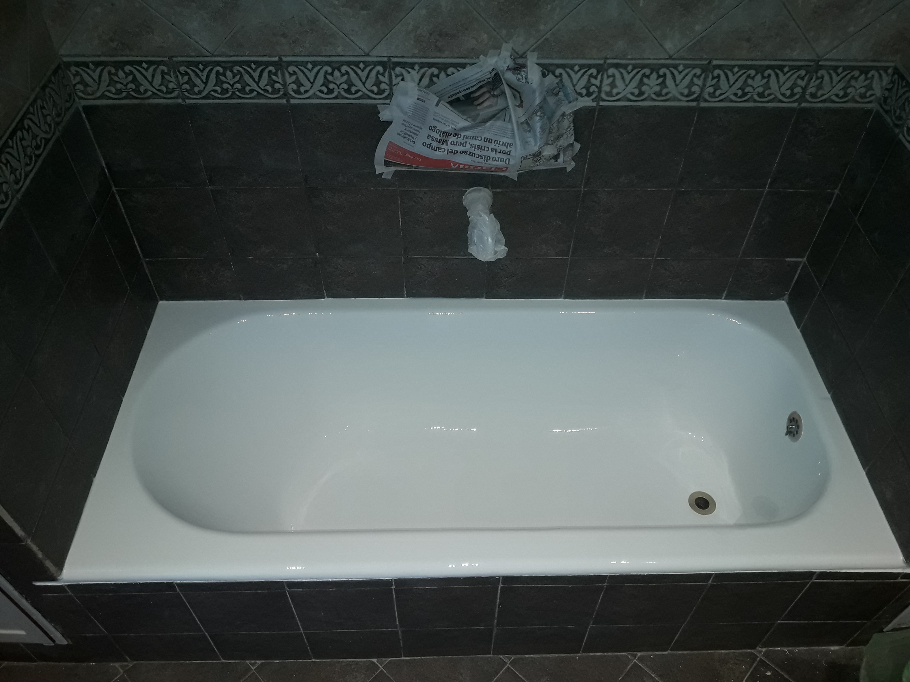
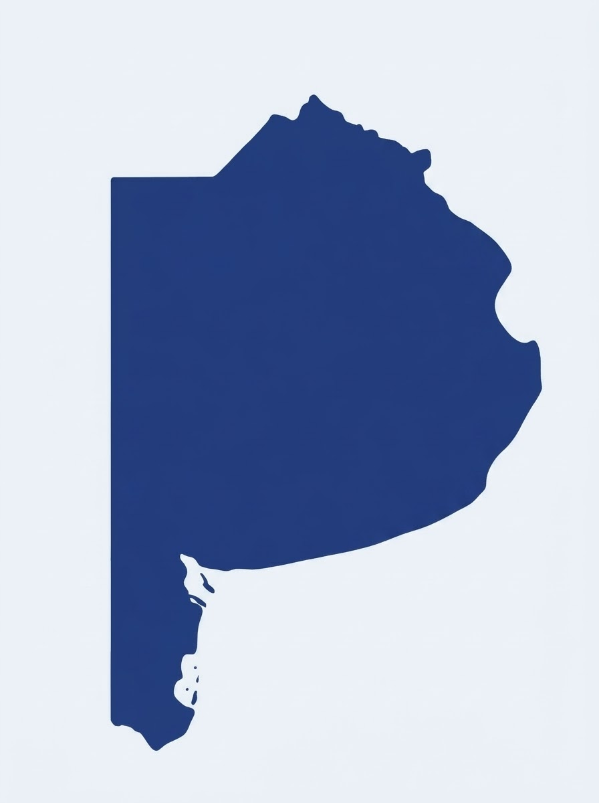
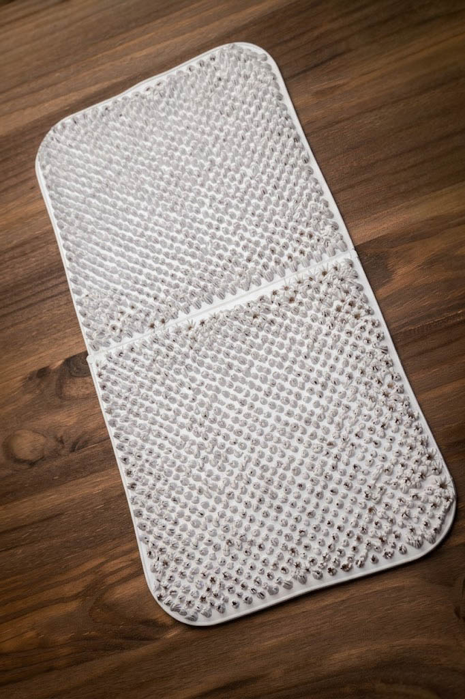

Sin romper azulejos ni meterte en albañilería eterna. Tratamos el óxido, reparamos fisuras y devolvemos un blanco porcelanizado de alto brillo y resistencia.

"Muchas veces nos consultan si es posible cambiar el color del enlozado y la respuesta es: ¡SÍ, POR SUPUESTO!"

Somos dos jóvenes de 26 años que nos lanzamos juntos a cumplir un sueño: crear nuestro propio emprendimiento para ayudarte a transformar los espacios de tu hogar y darles nueva vida sin necesidad de meterte en una obra.
Mientras Facu se encarga de las reparaciones y el enlozado con una obsesión en cada detalle para que todo recupere su brillo original, Valen está detrás de las redes y la atención, escuchándote y acompañándote desde el primer mensaje para asesorarte sin vueltas.
Bañeras de fundición, chapa, fibra, bachas y transformaciones completas.
Bañeras antiguas de fundición, chapa o fibra de vidrio. Acabado blanco radiante de alto brillo.
Anulación de jets en desuso y sellado estructural. Convertimos jacuzzis en cómodas bañeras tradicionales.
Soldado de chapas perforadas, nivelación con masillas epoxi sanitarias y refuerzo de fondo.
Renovación integral de bachas, vanitorys y paredes de azulejos sin entrar en obra pesada.
Mantenimiento y recuperación por lote para hoteles y alojamientos turísticos en todo el país.
Te decimos con honestidad si tu artefacto es apto mandando una foto por WhatsApp.
Muchos piensan que es "solo pintar por encima". En Enlozados del Sur te mostramos con hechos por qué nuestro trabajo no se descascara, usando una bacha real como ejemplo.


Nuestra base está en Banfield, pero salimos en la camioneta a donde nos llamen. Elegí la zona:

Las alfombras comunes con ventosas hacen un efecto sopapa continuo que genera tensión y puede levantar el material. Por eso recomendamos nuestras alfombras sin ventosas de PVC.

Segura para pies descalzos y amigable con el acabado enlozado.